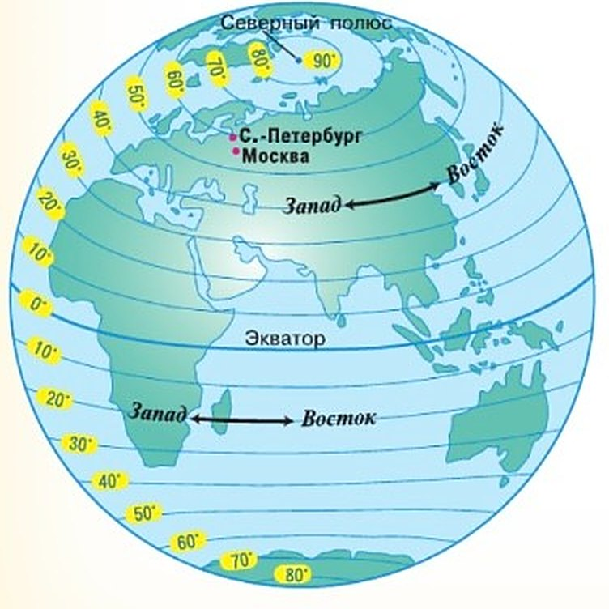
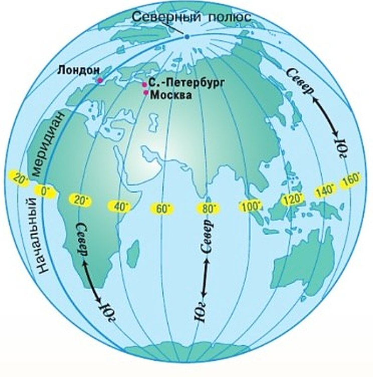
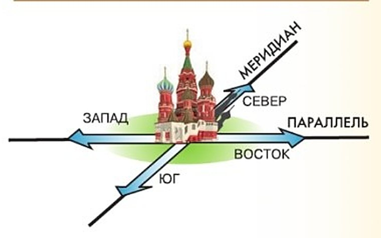
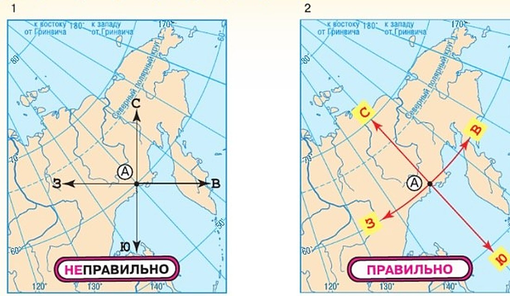

Что такое градусная сетка?
Глобус и карта покрыты сетью тонких линий — это градусная сетка. Некоторые линии ты уже знаешь по разделу «Планета Земля». Все они воображаемые: на самой Земле их нет. Люди придумали их, чтобы точно указывать, где что находится.
Горизонтальные линии — параллели, вертикальные — меридианы.
Параллели. Главная — экватор, посередине между полюсами. Он делит Землю на Северное и Южное полушария. По обе стороны от него идут параллели: все точки одной параллели на одинаковом расстоянии от экватора (рис. 42). Ближе к полюсам параллели короче. Экватор — самая длинная, больше 40 000 км, а у самых полюсов параллель сжимается в точку.
Меридианы. Северный и Южный полюсы соединяют полуокружности — меридианы (рис. 43). «Меридиан» по-латыни — «полуденная линия»: он совпадает с тенью от предметов в полдень (рис. 44, § 9). Все меридианы одной длины — около 20 000 км — и сходятся на полюсах.
Посмотрите на географическую карту или глобус. Они покрыты сетью тонких линий. Эти линии образуют градусную сетку. С некоторыми из линий вы уже познакомились в теме «Планета Земля» (вспомните с какими). Вы также узнали, что градусная сетка — отличительная особенность географической карты. Все линии градусной сетки воображаемые, в природе они не существуют. Люди придумали их для того, чтобы точно определять положение любого объекта на Земле. Горизонтальные линии — это параллели, а вертикальные — меридианы.
Найдите на карте полушарий экватор. Вы знаете, что эта линия проведена на одинаковом расстоянии от Северного и Южного полюсов. Слово «экватор» в переводе с латинского означает «уравнитель». Он делит Землю на Северное и Южное полушария. По обе стороны от экватора располагаются параллели. В переводе с греческого «параллель» — «идущий рядом». Действительно, все точки одной параллели находятся на одинаковом расстоянии от экватора (рис. 42). Параллели можно провести через любую точку Земли. При движении к полюсам длина параллелей уменьшается. Экватор — самая длинная параллель — более 40 000 км. А самые короткие параллели — полюсы, представляющие собой точки.
Найдите на карте полушарий (с. 180—181) Северный и Южный полюсы. Их соединяют дугообразные линии (полуокружности) — меридианы (рис. 43). В переводе с латинского слово «меридиан» означает «полуденная линия». Вы уже знаете, что её направление совпадает с направлением тени от предметов в полдень (рис. 44).
Меридианы, как и параллели, можно провести через любую точку земного шара. Но, в отличие от параллелей, все меридианы одной длины — примерно 20 000 км. На Северном и Южном полюсах меридианы сходятся в одной точке.



Вернитесь к § 10. Посмотрите на рисунок 26.
Параллель — воображаемая линия на земном шаре, все точки которой находятся на одинаковом расстоянии от экватора.
Меридиан — воображаемая линия на поверхности земного шара, соединяющая Северный и Южный полюсы по кратчайшему расстоянию.
Параллели — линии направления запад—восток. Меридианы — линии направления север—юг.
Градусную сетку образуют параллели и меридианы. Параллели расположены между полюсами параллельно экватору. Меридианы соединяют Северный и Южный полюсы по кратчайшему расстоянию на поверхности Земли.
1. С какими линиями градусной сетки ты уже знакома по разделу «Планета Земля»?
2. Почему параллели к полюсам короче, а меридианы все одной длины?
Как выглядит градусная сетка на глобусе и картах?
На глобусе параллели — окружности, к полюсам всё меньше, а меридианы — полуокружности одной длины.
На карте полушарий прямая линия только одна среди параллелей — экватор — и по одному меридиану посередине каждого полушария. Остальные — дуги.
Бывают карты, где сетка выглядит иначе: выпуклую поверхность можно перенести на плоскость по-разному. Сними шкурку с апельсина, надрезав сверху вниз, и попробуй разложить её на бумаге: она порвётся по краям. Выпуклую поверхность нельзя сделать плоской без искажений. Сравни Австралию и Гренландию на глобусе и на карте: ближе к полюсам искажения заметнее.
Главное: направления на карте определяют по меридианам и параллелям, а не по краям листа (рис. 45).
На глобусе все параллели имеют форму окружностей, радиус которых уменьшается к полюсам, а все меридианы — форму дуг (полуокружностей) равной длины. На карте полушарий только экватор — прямая линия, остальные параллели выглядят как дуги (см. физическую карту полушарий в Приложении). На той же карте среди меридианов только один срединный (для каждого из двух полушарий) — прямая линия, а остальные — дуги разной длины.
Существуют карты, на которых меридианы и параллели выглядят иначе. Это результат разных способов изображения выпуклой поверхности на плоскости. Снимите аккуратно шкурку с апельсина, надрезав её сверху вниз, и попробуйте разложить её на листе бумаги. Она порвётся прежде всего по краям, так как выпуклую поверхность нельзя сделать плоской без искажений. Посмотрите, как по-разному выглядят Австралия и остров Гренландия на глобусе и на карте. Чем ближе к полюсам, тем заметнее искажения на карте.
Главное, необходимо помнить, что определять направления на карте следует по меридианам и параллелям (рис. 45).

▲ Сравни две карты: почему на правой стрелка «С» смотрит не вверх, а влево-вверх?
Градусная сетка на глобусе всегда состоит из окружностей и полуокружностей. На картах она может иметь разный вид.
3. Почему на рис. 45 левый способ «неправильный»?
4. Почему Гренландия на некоторых картах кажется огромной?
Как ведут отсчёт параллелей и меридианов?
Сетка из дуг и окружностей, поэтому считают в градусах — оттого она и градусная. Каждая параллель — окружность, в ней 360°, в том числе и в экваторе.
Параллели считают от экватора — это нулевая параллель. До каждого полюса — 90°.
Меридианы все одинаковые, поэтому начальный договорились выбрать. С 1884 года нулевой — Гринвичский. Он проходит через Гринвич, пригород Лондона, где в 1675 году открыли одну из старейших обсерваторий мира. От него считают на восток — до 180° — и на запад — до 180°. Нулевой и 180-й меридианы делят Землю на Западное и Восточное полушария.
Градусы меридианов подписаны вдоль экватора и на верхней и нижней рамках карты, а градусы параллелей — на боковых рамках.
Градусы и километры. Вдоль любого меридиана и вдоль экватора 1° — около 111 км. А на других параллелях 1° тем короче, чем ближе к полюсу.
Дугу меридиана измеряли многие учёные. Данные француза Ж. Пикара (1670) использовал Исаак Ньютон, чтобы подтвердить закон всемирного тяготения. А в России в 1816—1855 годах академик В. Я. Струве измерил «Русскую дугу меридиана» — 2820 км, больше 250 пунктов, от Норвегии до Молдавии. Теперь это памятник ЮНЕСКО — «Геодезическая дуга Струве».
Поскольку мы имеем дело с дугами и окружностями, все расчёты по картам следует делать в градусной мере (потому и сетка называется градусной). Все параллели — окружности и содержат 360°, в том числе и экватор. Его называют нулевой параллелью и от него ведут отсчёт остальных параллелей. От экватора до каждого из полюсов градусное расстояние составляет 90°.
Все меридианы по длине одинаковы. С 1884 г. за нулевой меридиан, от которого ведут отсчёт, принят Гринвичский. Он проходит через пригород Лондона Гринвич, где в 1675 г. была основана одна из старейших в мире астрономических обсерваторий. От нулевого (начального) меридиана ведут отсчёт расстояния в градусах на восток от 0° до 180° и на запад от 0° до 180°. Нулевой и 180-й меридианы разделяют земной шар на Западное и Восточное полушария.
Для меридианов градусы указывают вдоль экватора и на верхней и нижней рамках карты, а для параллелей — на боковых рамках (см. карты в Приложении).
Для составления карт и работы с ними используют градусную меру. Но на поверхности Земли удобнее использовать меры длины. По любому меридиану и экватору 1° составляет примерно 111 км. А вот на каждой параллели 1° дуги соответствует разное количество километров — чем ближе к полюсу, тем меньше.
Длину дуги меридиана измеряли многие учёные. Например, данные, полученные французским астрономом Ж. Пикаром в 1670 г., были использованы И. Ньютоном для численного подтверждения закона всемирного тяготения. Крупным национальным достижением России стала «Русская дуга меридиана», охватившая четырнадцатую часть окружности Земли по 25°20′ в. д. и составившая 2820 км. Измерения производились с 1816 по 1855 г. под руководством академика В. Я. Струве более чем в 250 пунктах дуги меридиана по территории Российской империи. Этот грандиозный научно-технический памятник, проходящий с севера на юг через несколько нынешних государств от Норвегии до Молдавии, внесён в список Всемирного наследия ЮНЕСКО под названием «Геодезическая дуга Струве».
От экватора вдоль меридианов ведут отсчёт расстояний в градусах на север и на юг (от 0 до 90°). От Гринвичского меридиана вдоль параллелей ведут отсчёт расстояний в градусах на запад и на восток (от 0 до 180°).
5. Почему параллели считают только до 90°, а меридианы — до 180°?
6. Сколько километров в 1° вдоль меридиана Москвы? А вдоль её параллели?
Итоги параграфа
- На карте полушарий найдите экватор, Северный и Южный тропики, полярные круги, нулевой меридиан и город Лондон. Нанесите их на контурную карту.
- Дайте определение параллелей и меридианов.
- Точка пересечения воображаемой оси вращения Земли с её поверхностью называется: а) экватором; б) параллелью; в) полюсом; г) меридианом.
- Кратчайшая воображаемая линия, проведённая по поверхности Земли от одного полюса до другого, называется: а) экватором; б) параллелью; в) меридианом.
- Длина параллелей от экватора к полюсам: а) увеличивается; б) уменьшается; в) не изменяется.
- Направление север—юг показывает: а) экватор; б) параллель; в) меридиан.
- Длина экватора составляет примерно: а) 10 000 км; б) 40 000 км; в) 30 000 км; г) 45 000 км.
- На карте направление запад—восток совпадает с направлением: а) параллелей; б) меридианов.
- Расстояние от экватора до полюсов в градусной мере составляет: а) 90°; б) 360°; в) 180°.
- По карте России определите: а) в каком направлении от Москвы находится Санкт-Петербург; б) в каком направлении от Санкт-Петербурга находится Чёрное море.
- Определите, в каком направлении от Москвы находятся: а) Белое море; б) Чёрное море; в) архипелаг Новая Земля; г) Уральские горы; д) Скандинавские горы.
Проверь себя
Экватор
Самая длинная параллель.
Гринвичский
Нулевой меридиан.
Направление север — юг
Меридиан соединяет полюсы.
Направление запад — восток
Параллель идёт вокруг Земли.
Все одной длины, около 20 000 км
От полюса до полюса.
К полюсам становится короче
На полюсе — точка.
«Полуденная линия»
Совпадает с тенью в полдень.
Северный тропик
Тропики и полярные круги — параллели.
От экватора до Северного полюса
Четверть окружности.
От Гринвича на восток до 180-го меридиана
Половина окружности.
Вся окружность параллели
Любая окружность.
Экватор целиком
Экватор — тоже окружность.
От Гринвича на запад до 180-го меридиана
Тоже половина.
От экватора до Южного полюса
Как и до Северного.
1. Какие линии показывают направление север — юг?
2. Какая параллель самая длинная?
3. От какого меридиана ведут отсчёт?
4. Сколько градусов от экватора до полюса?
5. Сколько километров примерно в 1° вдоль меридиана?
6. Почему на карте бывают искажения?
Расскажи вслух
Параллели и меридианы
- Градусная сетка — воображаемые линии, чтобы точно определять положение объектов.
- Параллели — на одинаковом расстоянии от экватора, запад — восток; к полюсам короче.
- Меридианы — от полюса до полюса, север — юг; все около 20 000 км.
Сетка на глобусе и на карте
- На глобусе — окружности и полуокружности.
- На картах сетка может выглядеть по-разному; выпуклое не сделать плоским без искажений.
- Направления на карте — только по меридианам и параллелям.
Как ведут отсчёт
- Параллели — от экватора, до 90° на север и на юг.
- Меридианы — от Гринвичского (с 1884 г.), до 180° на восток и на запад.
- 1° вдоль меридиана — около 111 км; дуга Струве — 2820 км.